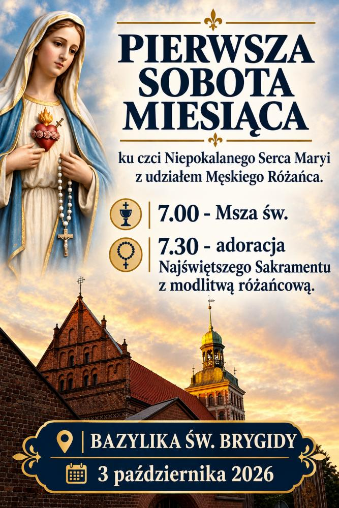

- Kiedy
- sobota, 3 października 2026, od 7.00
- Gdzie
- Bazylika św. Brygidy, ul. Profesorska 17
Program
- 7.00Msza święta
- 7.30adoracja Najświętszego Sakramentu z modlitwą różańcową
Zapraszamy w pierwszą sobotę miesiąca na modlitwę ku czci Niepokalanego Serca Maryi z udziałem Męskiego Różańca. Nabożeństwa w tygodniu
Opublikowano 29 IX 2026
